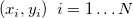

このチュートリアルでは、複数線形回帰法を使って有理フィット関数の初期パラメータを計算する方法を示します。また、計算された初期パラメータを使用してフィットを実行します。
必要なOriginのバージョン: Origin 9.0 SR0以降
このチュートリアルでは、以下の項目について解説します。
このチュートリアルでは、次の有理関数を例として使用します。
xは独立変数、yは従属変数、a, b, c, d, eは全てフィットパラメータです。
両辺を右辺の分母で掛けると、次のようになります。
この数式は次のように表現できます。
フィットデータ を数式に代入すると、次のようになります。

よって、有理多項フィット関数の初期パラメータを推定するのは、線形係数としてa, b, c, d, eを持つ、複数の線形回帰の問題に変形します。つまり、次のような式になります。

Originは複数線形回帰のための関数ocmath_複数線形回帰をOriginCから提供しており、初期化コードで呼び出すことができます。

フィット関数は、フィット関数ビルダーツールを使用して定義できます。
(a+b*x+c*x^2)/(1+d*x+e*x^2)
評価ボタンをクリックすると、x=1の時にy=1であると示しているので、数式は正しいことを示しています。進むボタンをクリックします。
UINT nOSizeN = x_data.GetSize(); //ポイントの数 UINT nVSizeM = 5; //パラメータの数 matrix mX(nOSizeN, 5); //独立変数のデータポイントのための行列を作成する vector vCa(nOSizeN), vCb, vCc, vCd, vCe; vCa = 1; mX.SetColumn( vCa, 0 ); vCb = x_data; mX.SetColumn( vCb, 1 ); vCc = x_data^2; mX.SetColumn( vCc, 2 ); vCd = -x_data*y_data; mX.SetColumn( vCd, 3 ); vCe = -x_data^2*y_data; mX.SetColumn( vCe, 4 ); //複数の線形回帰オプション LROptions stLROptions; stLROptions.UseReducedChiSq = 1; stLROptions.FixIntercept = 1; //交点を0に固定FitParameter stFitParameters[ 6 ]; // nVSizeM+1 となるはずです UINT nFitSize = nVSizeM + 1; int nRet = ocmath_multiple_linear_regression(mX, nOSizeN, nVSizeM, y_data, NULL, 0, &stLROptions, stFitParameters, nFitSize ); if( nRet == STATS_NO_ERROR ) { a = stFitParameters[1].Value; b = stFitParameters[2].Value; c = stFitParameters[3].Value; d = stFitParameters[4].Value; e = stFitParameters[5].Value; }
コンパイルボタンをクリックしてファイルをコンパイルします。NLSFに戻るボタンをクリックします。完了をクリックして、フィット関数ビルダーダイアログを閉じます。

フィット曲線は次のようになります。
フィットパラメータは以下の通りです。
| パラメータ | 値 | 標準誤差 |
|---|---|---|
| a | 3.17139 | 0.30284 |
| b | -1.65602 | 1.76748 |
| c | 0.26407 | 1.81764 |
| d | 3.6884 | 0.26362 |
| e | 5.31812 | 0.55265 |
| x | y |
|---|---|
| -1.5 | 1.13173 |
| -1.39474 | 0.8262 |
| -1.28947 | 1.06999 |
| -1.18421 | 1.37155 |
| -1.07895 | 0.79569 |
| -0.97368 | 2.11346 |
| -0.86842 | 2.32006 |
| -0.76316 | 3.9205 |
| -0.65789 | 5.81904 |
| -0.55263 | 7.38037 |
| -0.44737 | 8.31272 |
| -0.34211 | 11.39718 |
| -0.23684 | 8.39808 |
| -0.13158 | 4.7305 |
| -0.02632 | 4.11105 |
| 0.07895 | 2.39105 |
| 0.18421 | 1.65394 |
| 0.28947 | 0.42953 |
| 0.39474 | 0.83337 |
| 0.5 | 1.18758 |
| Noteこの方法を使って、他の有理多項フィット関数のパラメータも初期化できます。 |